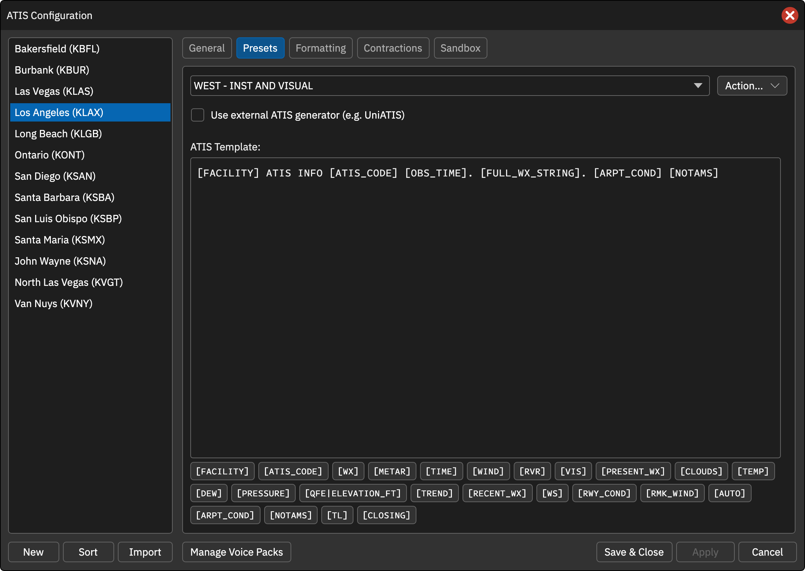
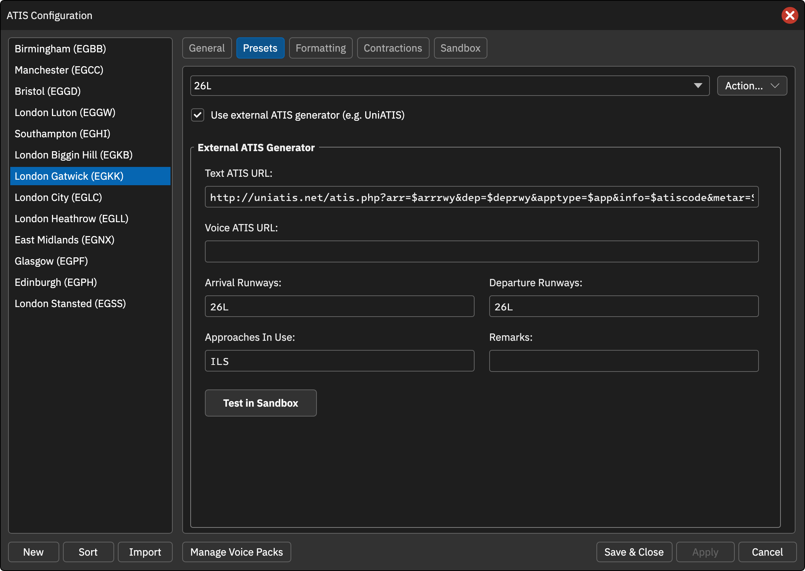
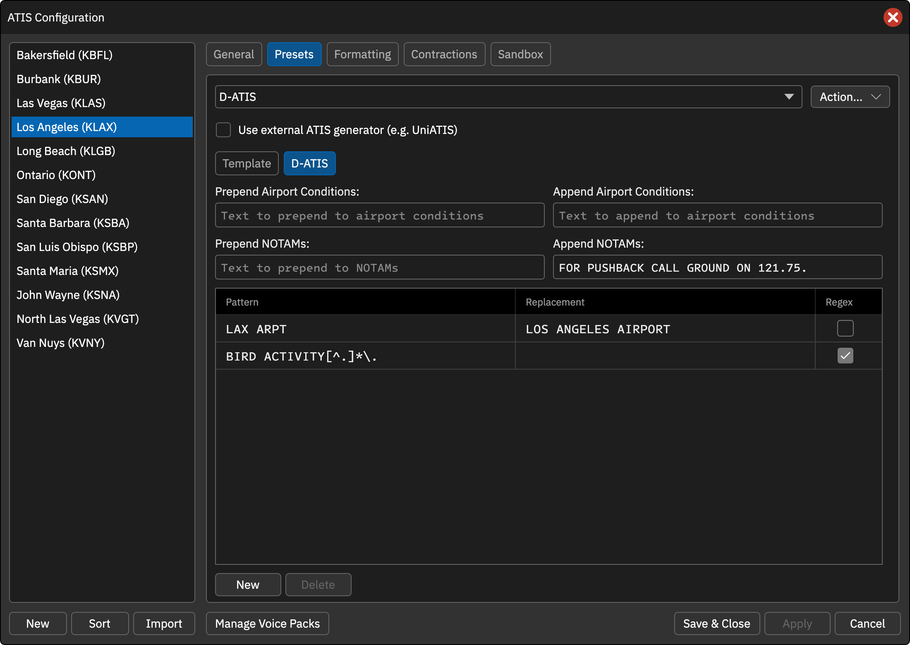

本页目录
预设与模板
Presets 标签页用于新建、复制、重命名、删除预设。下拉框下面是模板编辑器；生成情报时将变量替换为实际数据，文字和语音可使用不同的展开结果。
变量可写为 [WX] 或 $WX。在文字 ATIS 中使用 [WX:VOX] / $WX:VOX 可插入语音展开文本。
模板变量
| 变量及别名 | 含义 |
|---|---|
[FACILITY] |
文字为机场代码，语音为机场名称 |
[ATIS_CODE]、[ATIS_LETTER]、[LETTER]、[ID] |
当前 ATIS 字母 |
[WX]、[FULL_WX_STRING] |
按顺序包含风、能见度、RVR、天气、云、温度/露点、气压、近期天气、风切变、跑道状况和趋势 |
[METAR] |
完整气象原报，不带前导 METAR 关键字 |
[OBS_TIME]、[OBSTIME]、[TIME] |
观测时间 |
[WIND]、[SURFACE_WIND] |
地面风 |
[RVR] |
跑道视程 |
[VIS]、[PREVAILING_VISIBILITY] |
主导能见度 |
[PRESENT_WX]、[PRESENT_WEATHER] |
当前天气现象 |
[CLOUDS] |
云况 |
[TEMP]、[DEW] |
气温、露点 |
[PRESSURE]、[QNH] |
气压 |
[PRESSURE_XXXX] |
另一机场的高度表设定，将 XXXX 替换为机场代码 |
[QFE\|ELEVATION_FT] |
按给定跑道入口标高（英尺）计算 QFE |
[TREND] |
趋势预报 |
[RECENT_WX] |
近期天气 |
[WS] |
风切变 |
[RWY_COND]、[RUNWAY_CONDITION] |
METAR 跑道状态 |
[RMK_WIND] |
METAR 备注风 |
[AUTO] |
仅在 AUTO 报文中插入自动观测提示 |
[ARPT_COND]、[ARRDEP] |
机场运行情况，自由文本和选中固定消息用空格连接 |
[NOTAMS] |
航行通告，按通告格式模板包装 |
[TL] |
按 QNH 区间选取过渡高度层，非 FAA 模式 |
[CLOSING] |
结束语 |
外部 ATIS 生成器
选定预设后，勾选 Use external ATIS generator (e.g. UniATIS)。设置只作用于当前预设，可为不同预设配置不同生成器。
启用后使用服务返回内容，预设模板及本地格式设置不参与同一套生成流程。
- Text ATIS URL：返回文字情报的地址。
- Voice ATIS URL：返回待朗读文本的地址，无独立输出时可与文字 URL 相同；不是直接填写音频文件地址。
- Arrival Runways / Departure Runways / Approaches In Use / Remarks：传给服务的参数，输入时转大写。
缺少所需 URL 时会报错。地址支持以下区分大小写的替换变量：
| 变量 | 替换内容 |
|---|---|
$metar |
当前 METAR |
$atiscode |
当前字母 |
$arrrwy |
进场跑道 |
$deprwy |
离场跑道 |
$app |
进近方式 |
$remarks |
备注 |
参数自动 URL 编码。未指定协议时程序添加 http://，可直接填写完整 HTTPS 地址。
返回格式
生成器应返回纯文本。程序去掉方括号但保留内容，将 <br> 转为换行并合并重复空格；响应中的普通换行会被忽略。语音文本继续处理缩略语与 +机场/导航台。实际生成音频仍需要 TTS 或 WAV 包，不因有生成器就自动具备语音。
点击 Test in Sandbox 应用修改后进入沙盒。
D-ATIS 预设
名称为 D-ATIS 时显示同名子标签页，用来处理自动获取的数字情报。设置按席位保存。
- Prepend / Append Airport Conditions：给运行情况前置或追加文字。
- Prepend / Append NOTAMs：给通告前置或追加文字。
- Text replacements：从上到下应用替换规则；Pattern 为查找内容，Replacement 为空表示删除。
- Regex：启用正则表达式；正则匹配后单个尾随逗号、句号或分号也会去掉。
New / Delete 管理规则；空模式忽略，无效正则跳过。选择 D-ATIS 预设时沙盒也会尝试获取数据，覆盖范围由 CAN 接口决定。
操作截图参考
以下为上游原版截图，保留英文标签。用于定位操作；品牌、登录字段与网络行为以本页 CAN 说明为准。


